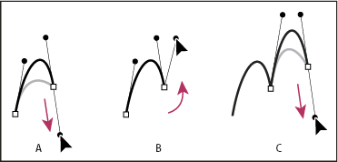

Draw two curved segments connected by a corner

Drawing two curves
- A.
- Dragging a new smooth point
- B.
- Pressing Alt/Option to split direction lines while dragging, and swinging direction line up
- C.
- Result after repositioning and dragging a third time